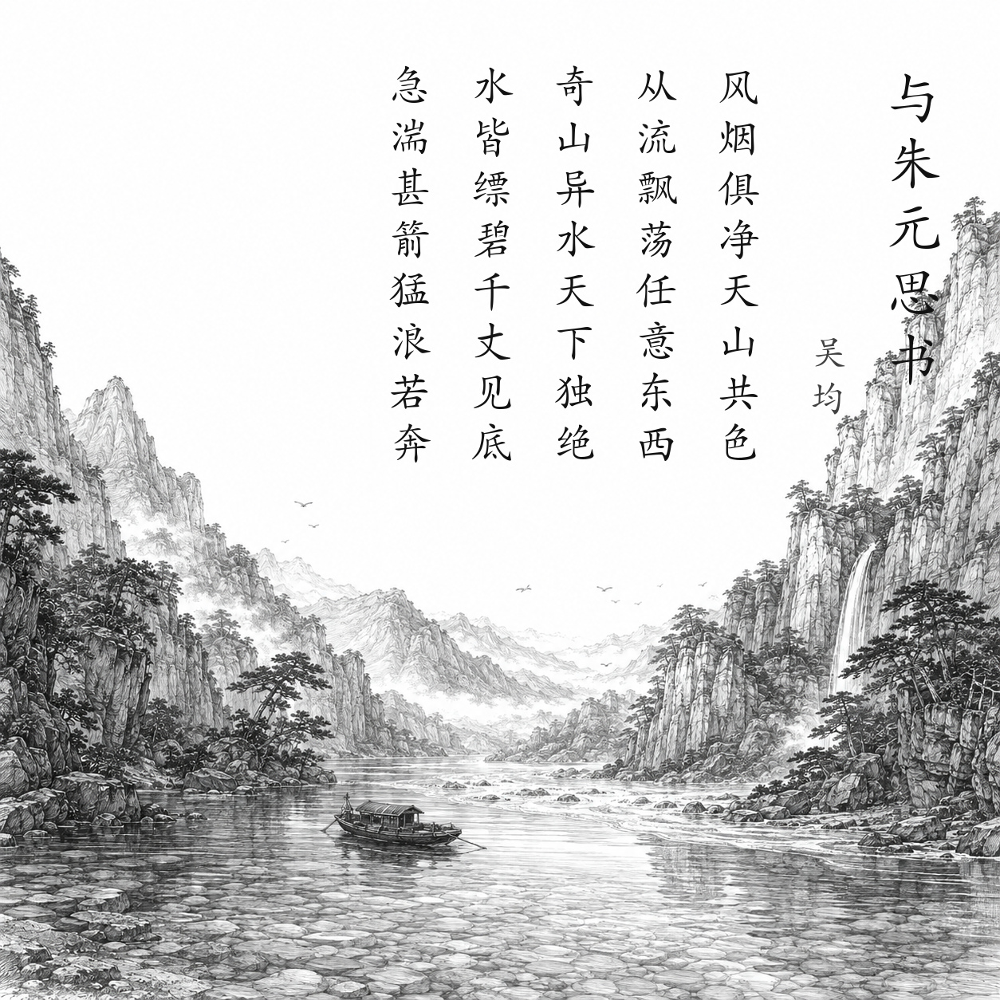

南朝梁 · 吴均
与朱元思书
风烟俱净，天山共色。从流飘荡，任意东西。自富阳至桐庐一百许里，奇山异水，天下独绝。
水皆缥碧，千丈见底。游鱼细石，直视无碍。急湍甚箭，猛浪若奔。
夹岸高山，皆生寒树，负势竞上，互相轩邈，争高直指，千百成峰。泉水激石，泠泠作响；好鸟相鸣，嘤嘤成韵。
蝉则千转不穷，猿则百叫无绝。鸢飞戾天者，望峰息心；经纶世务者，窥谷忘反。横柯上蔽，在昼犹昏；疏条交映，有时见日。
白话翻译
风停烟散，天空和山峦同为澄澈一色。我乘船随水漂荡，任凭它向东向西。从富阳到桐庐一百多里，奇山异水可称天下独一无二。
江水青白，深处也能见底，游鱼和细石看得清清楚楚。急流比箭还快，猛浪像飞奔的马。
两岸高山长满耐寒树木，山峰凭借地势争相向上，彼此比高比远，直插天空，形成千百座峰峦。泉水冲击岩石，发出清越声响；美丽的鸟彼此和鸣，声音和谐动听。
蝉声不停，猿啼不绝。追逐高位的人看见山峰会平息名利之心，忙于政务的人看见幽谷会流连忘返。横斜枝条遮住天空，即使白昼也像黄昏；稀疏枝叶交相掩映，偶尔才漏下日光。
为什么写这篇古诗文
文章以乘舟者的视线写富春江：先总写“奇山异水”，再分别描绘清而急的江水、争高的群山和泉鸟蝉猿之声。结尾由景入情，以山水足以让人忘却名利政务，表现作者对自然和自由生活的向往。它原是吴均写给朱元思书信中的一段，具体写信年月不可考。
关于作者
吴均（469—520），字叔庠，吴兴故鄣人，南朝梁文学家、史学家。其山水小品清峻有力，时人称其独特文风为“吴均体”。